Sentence-matched speech
Neutral, happy, and sad recordings with manually corrected Montreal Forced Aligner TextGrids.
Interactive speech editing research prototype
A controllable pipeline for transferring pitch, loudness, periodicity, duration, and phonetic features from an emotional donor to selected vowels in neutral speech.
Why vowel-level editing?
Emotion emerges from coordinated changes in pitch, loudness, timing, and voice quality. Conventional recordings make these cues difficult to isolate because they naturally change together.
This project uses ProMoNet to manipulate selected cues inside aligned vowels while retaining surrounding consonants and sentence content.
Project at a glance
Neutral, happy, and sad recordings with manually corrected Montreal Forced Aligner TextGrids.
Select individual vowels and transfer pitch, loudness, periodicity, duration, or PPG.
Export an edited WAV, feature tensors, and a per-vowel record of every transferred cue.
Donor-transfer workflow
The recordings must share the same ordered vowel sequence, preventing transfer between unrelated speech segments.
Read vowel intervals from corrected TextGrids and verify sequence correspondence.
Convert boundaries to frames and extract pitch, loudness, periodicity, duration, and PPG.
Choose the vowels and donor features to transfer in the notebook interface.
Replace selected neutral segments, resampling trajectories when neutral timing is retained.
Reconstruct with the chosen ProMoNet voice and save the waveform and audit artifacts.
Boundary behavior: an optional taper blends continuous acoustic features into the neutral context. PPG uses a direct splice because it represents categorical phonetic information.
Two guided interfaces
Choose recordings, set a training target, resume managed runs, and confirm the resulting checkpoint.
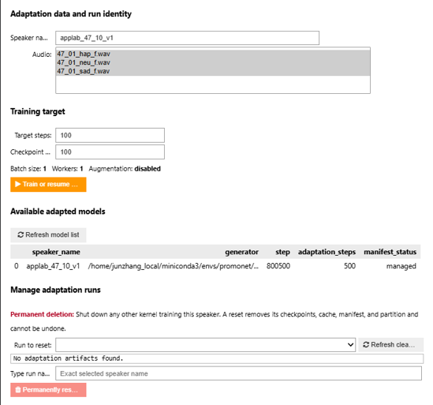
Pair neutral and donor recordings, select aligned vowels, choose donor features, and synthesize the result.
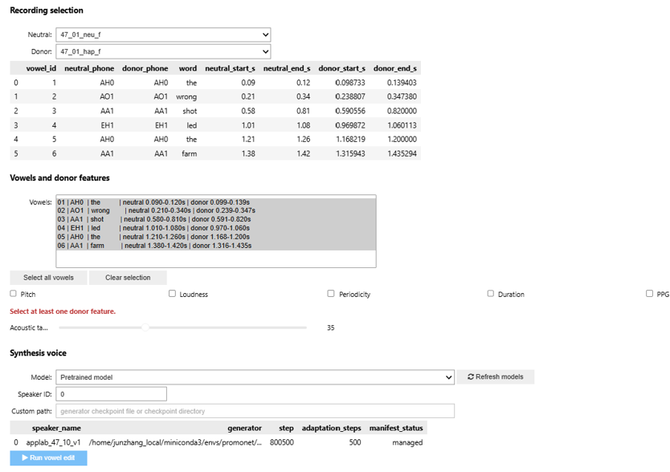
Sentence-matched demonstration
All examples use sentence 47_01. Each player is paired with the same-scale spectrogram and its DNSMOS Pro predicted speech-quality MOS.
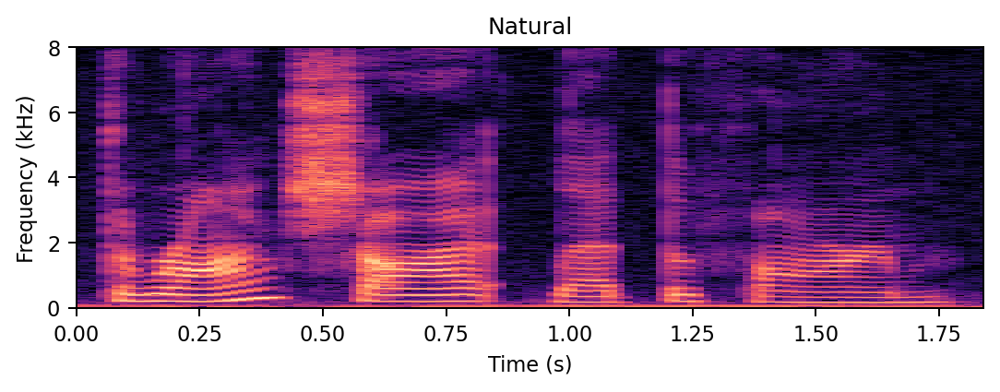
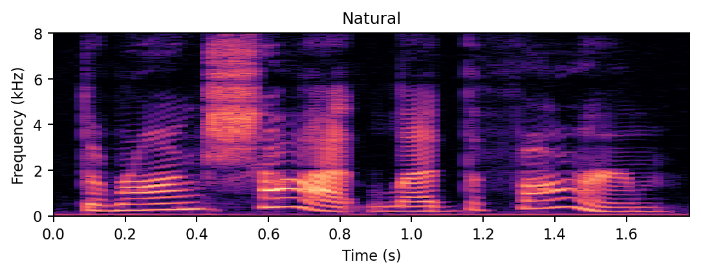
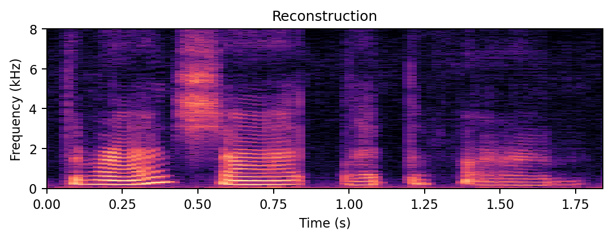
Controlled edits
These examples use the same happy donor, all aligned vowels, and a 0 ms boundary taper.
Transfers the donor fundamental-frequency trajectory.
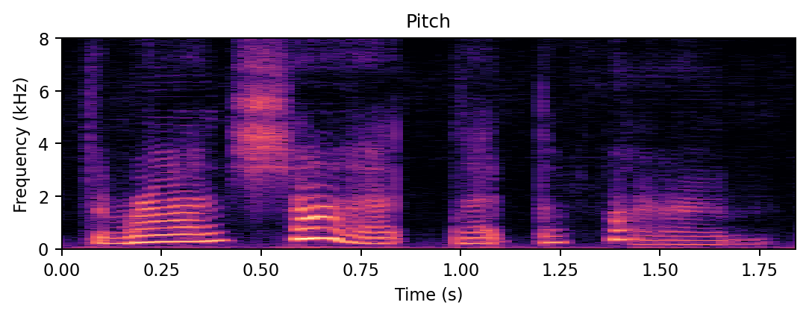
Transfers the donor energy trajectory.
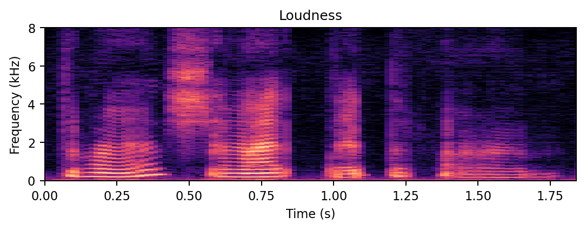
Transfers the donor degree of voiced excitation.
Adopts the duration of each donor vowel.
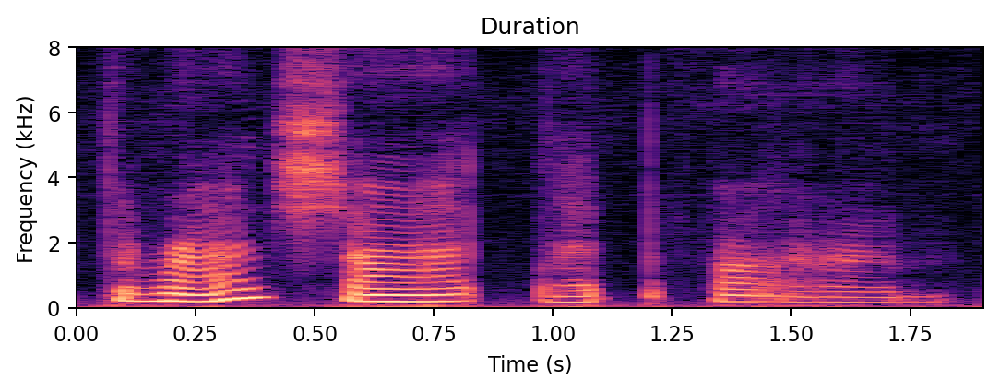
Transfers the donor phonetic posteriorgram.
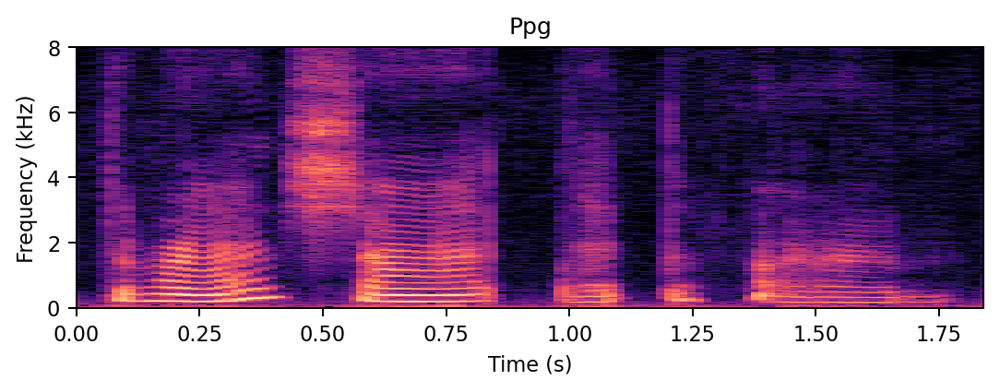
Transfers pitch, loudness, periodicity, duration, and PPG together.
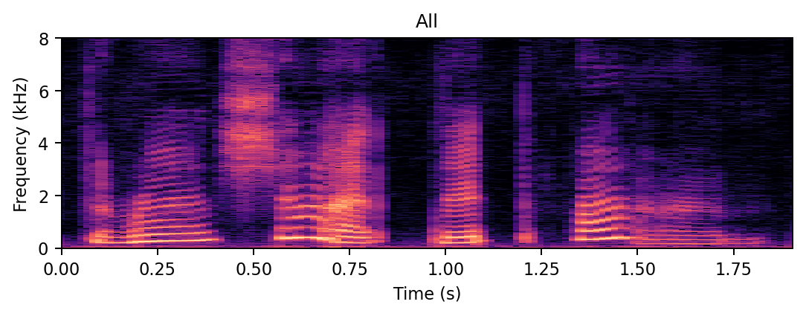
Praat comparison
Both files use the matching sentence 47_01 and transfer donor pitch, loudness, and duration contours.
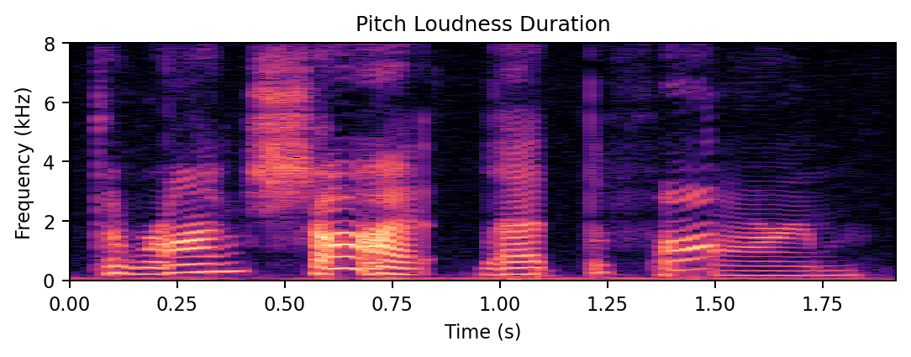
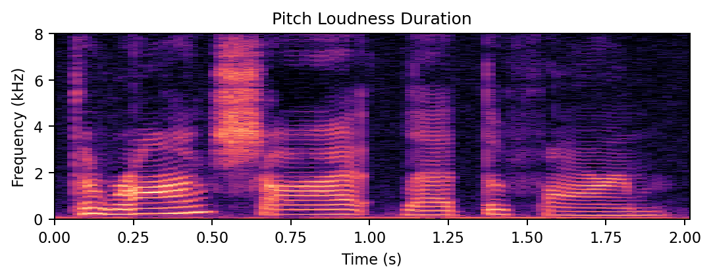
Predicted speech quality
Higher predicted MOS indicates better perceived speech quality on the model’s 1–5 scale. These values describe quality, not transcription accuracy or emotion strength.
| Pipeline | Neutral | Happy | Sad |
|---|---|---|---|
| Original audio | 2.381 | 2.718 | 2.563 |
| Vowel-edit pipeline | 2.120 | 2.169 | 2.144 |
| Praat pipeline | — | 2.087 | 2.123 |
Means use 50 original trials per emotion; 50 neutral reconstructions; 49 happy and 50 sad edits per pipeline. Happy sentence 39 is excluded because its aligned vowel sequence does not match.
Method: the NISQA-trained DNSMOS Pro checkpoint was pinned to commit 72f0fa4. Audio was converted to mono 16 kHz, repetitively extended or cropped to 10 seconds, and scored with the model’s recommended STFT input. The displayed score is the predicted MOS mean; model variance is retained in the CSV files.
Feature trajectories
Orange shows the donor, blue the neutral base, and green the edited output. Shaded bands mark aligned vowel regions.
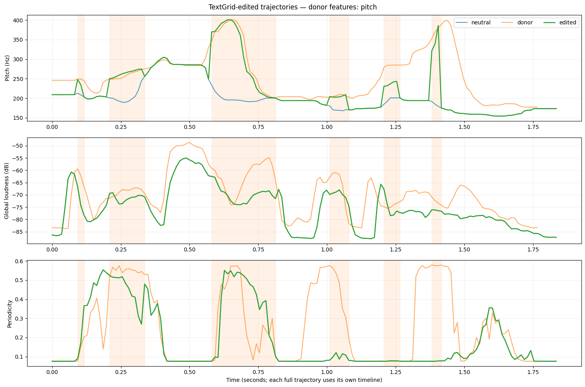
Objective validation
Before evaluating the edits, the 150 natural recordings establish how well audEERING represents the three original emotion conditions.
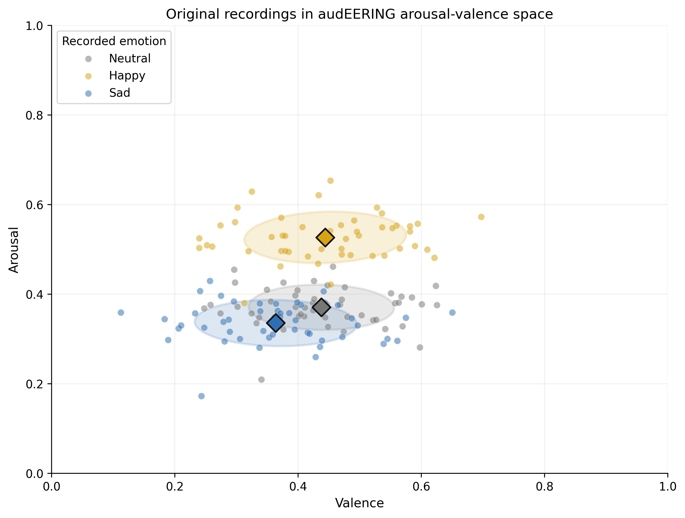
The happy originals form a clearly elevated arousal cluster, showing that audEERING captures the strongest emotion contrast well in these recordings.
Neutral and sad centroids also move in the expected direction, but their ellipses overlap. The model is therefore informative for this validation without implying perfect categorical classification.
Edited-trial comparison
All 398 recordings were scored with audEERING’s dimensional emotion model. Each edit was paired by speaker and sentence with its natural happy or sad target.
median target gain
median target gain
median target gain
median target gain
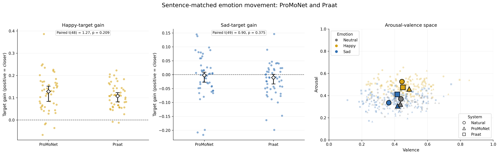
Both systems moved consistently toward natural happy speech. ProMoNet showed the larger median gain from its reconstruction baseline; Praat had the smaller absolute distance to the target.
Neither system showed consistent movement toward natural sad speech. Both bootstrap confidence intervals included zero.
| Target | System | N | Median gain | 95% bootstrap CI | Positive gain | Median target distance |
|---|---|---|---|---|---|---|
| Happy | ProMoNet | 49 | 0.1283 | [0.0836, 0.1521] | 91.8% | 0.1484 |
| Happy | Praat | 49 | 0.1077 | [0.0812, 0.1229] | 95.9% | 0.0846 |
| Sad | ProMoNet | 50 | −0.0022 | [−0.0271, 0.0086] | 48.0% | 0.1007 |
| Sad | Praat | 50 | −0.0105 | [−0.0336, 0.0012] | 38.0% | 0.1168 |
The medians above remain descriptive. The requested two-sided paired t-tests compare mean target gain between systems after matching the same sentence. Neither emotion shows a statistically significant ProMoNet–Praat difference.
| Target | Pairs | ProMoNet median | Praat median | Mean paired difference | t(df) | Two-sided p |
|---|---|---|---|---|---|---|
| Happy | 49 | 0.1283 | 0.1077 | +0.0130 | 1.27 (48) | 0.209 |
| Sad | 50 | −0.0022 | −0.0105 | +0.0130 | 0.90 (49) | 0.375 |
Interpretation limit: this validation includes one female native speaker of American English. The bootstrap intervals describe variation across this speaker’s sentences and do not support speaker-general conclusions.
Reproduce the workflow
The public repository contains the two interfaces, the Praat baseline, DNSMOS Pro quality analysis, audEERING scoring and statistics, and the environment specification.
Open the GitHub repository{kind=link}
{kind=link}